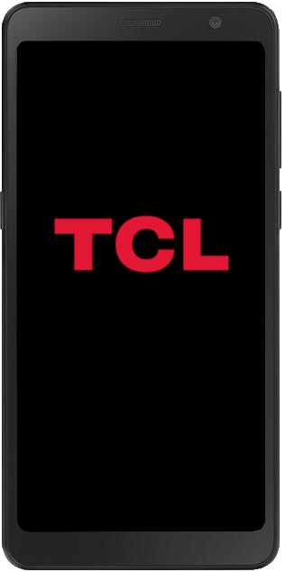

TCL A3 (tcl-bangkok_tf)
|
 An image of the TCL A3 boot screen. | |
| Manufacturer | TCL |
|---|---|
| Name | A3 |
| Codename | tcl-bangkok_tf |
| Released | 2021 |
| Category | testing |
| Original software | Android |
| Original version | 11 |
| postmarketOS kernel | 4.19.127 |
| Hardware | |
| Chipset | MediaTek Helio P22 (MT6762) |
| CPU | Octa-core 2.0 GHz Cortex-A53 |
| GPU | PowerVR GE8320 |
| Display | 720x1440 TFT LCD |
| Storage | 32 GB |
| Memory | 3 GB |
| Architecture | aarch64 |
| Type | handset |
| Unixbench Whet/Dhry score | ? |
{kind=link}
Status: Kernel compiles and flashing works, yet the device refuses to load the kernel. Further debugging needed.
| USB Networking |
Broken
|
|---|---|
| Flashing |
Partial
|
| Touchscreen |
Broken
|
| Display |
Broken
|
| WiFi |
Broken
|
| FDE |
Broken
|
| Mainline |
Broken
|
| Battery |
Broken
|
| 3D Acceleration |
Broken
|
| Audio |
Broken
|
| Bluetooth |
Broken
|
| Camera |
Broken
|
| GPS |
Broken
|
| Mobile data |
Broken
|
| SMS |
Broken
|
| Calls |
Broken
|
| USB OTG |
Broken
|
| NFC |
Broken
|
| Accelerometer |
Broken
|
|---|---|
| Magnetometer |
Unavailable
|
| Ambient Light |
Unavailable
|
| Proximity |
Broken
|
| Hall Effect |
Unavailable
|
| Barometer |
Unavailable
|
| Power Sensor |
Broken
|
| Camera Flash |
Broken
|
|---|---|
| Keyboard |
Unavailable
|
| Touchpad |
Unavailable
|
| USB-A |
Unavailable
|
| HDMI/DP |
Unavailable
|
| Ir TX |
Unavailable
|
| Ir RX |
Unavailable
|
| Stylus |
Unavailable
|
| Haptics |
Broken
|
| Ethernet |
Broken
|
| FOSS bootloader |
Unavailable
|
| While the kernel compiles and flashing is available, this device is in an extremely early state of development. Here Be Dragons |
The TCL A3 is a low-range smartphone manufactured by TCL. The device is quite powerful for its low price-point, making it a prime candidate for porting. The device is always carrier locked to the U.S. carrier Tracfone. The back cover can be removed with a small notch on the bottom right portion of the phone. Removing this reveals one microsd card slot, one sim card slot, and the battery, which is removable.
Contributors
- Justsoup
Users owning this device
- Justsoup (Notes: Attempting to Port)
How to enter flash mode
Due to the bootloader blocking access to fastboot mode, a TWRP recovery is required for flashing.
- Recovery: Power on the device while holding Volume Up + Power.
- MTKClient: Hold Volume Up + Volume Down and plug the device into the host computer running MTKClient.
Installation
Use pmbootstrap to build your own installation image.
$ pmbootstrap init
$ pmbootstrap install --android-recovery-zip --recovery-install-partition=data
Directly flashing zip with pmbootstrap does not seem to work at the moment:
$ pmbootstrap export
$ cd $(dirname $(readlink /tmp/postmarketOS-export/pmos-*.zip))
Put TWRP into sideload mode.
$ adb sideload pmos-alcatel-bangkok_tf.zip
MTKClient
Due to the disabling of fastboot in the device bootloader, it is required that TWRP is installed to flash easily. As such, to install TWRP in the first place, a tool called MTKClient is required.
To install TWRP:
- Unlock Bootloader
$ python mtk e metadata,userdata,md_udc
$ python mtk da seccfg unlock
$ python mtk reset- Download TWRP
- Flash to Recovery
$ python mtk w recovery <name of TWRP file>
$ python mtk resetBugs
Sometimes TWRP is unable to read the /data partition. An easy fix is to wipe the partition using TWRP [THIS WILL WIPE YOUR PMOS INSTALL] and then continue with flashing.